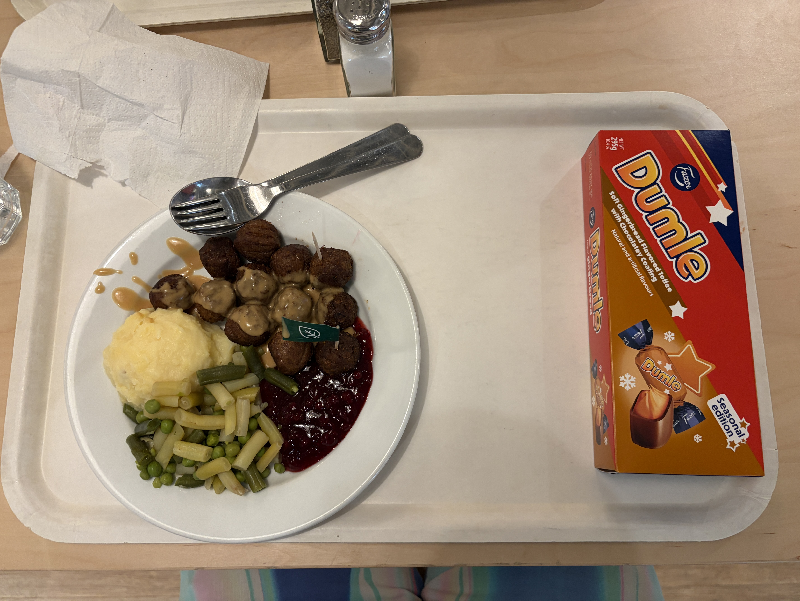
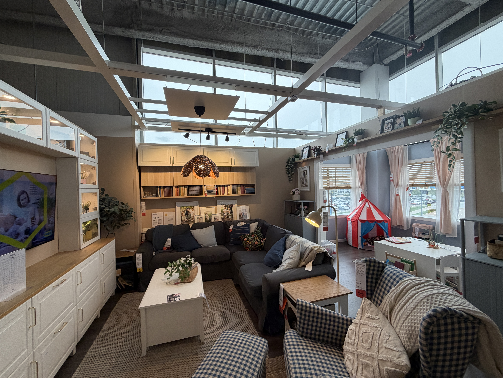
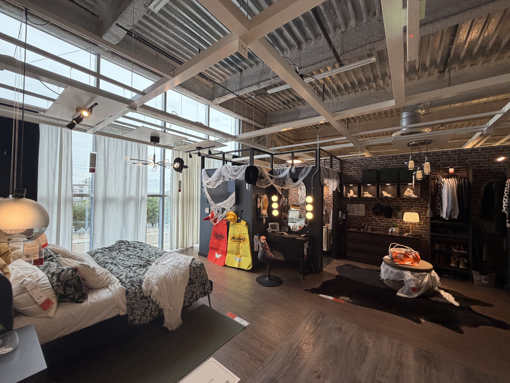
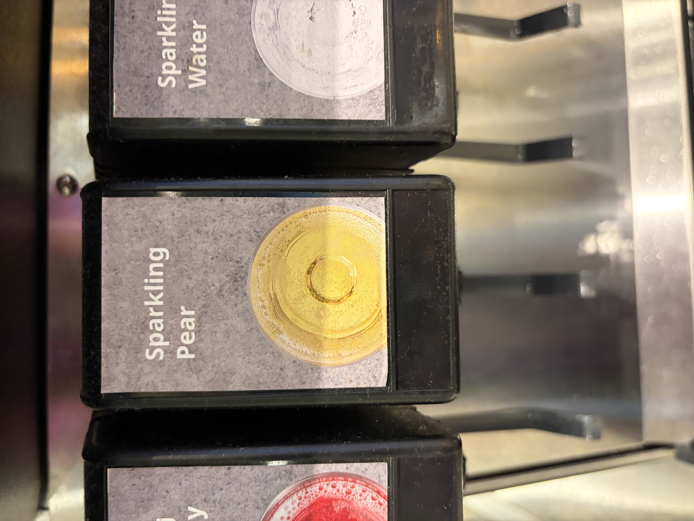
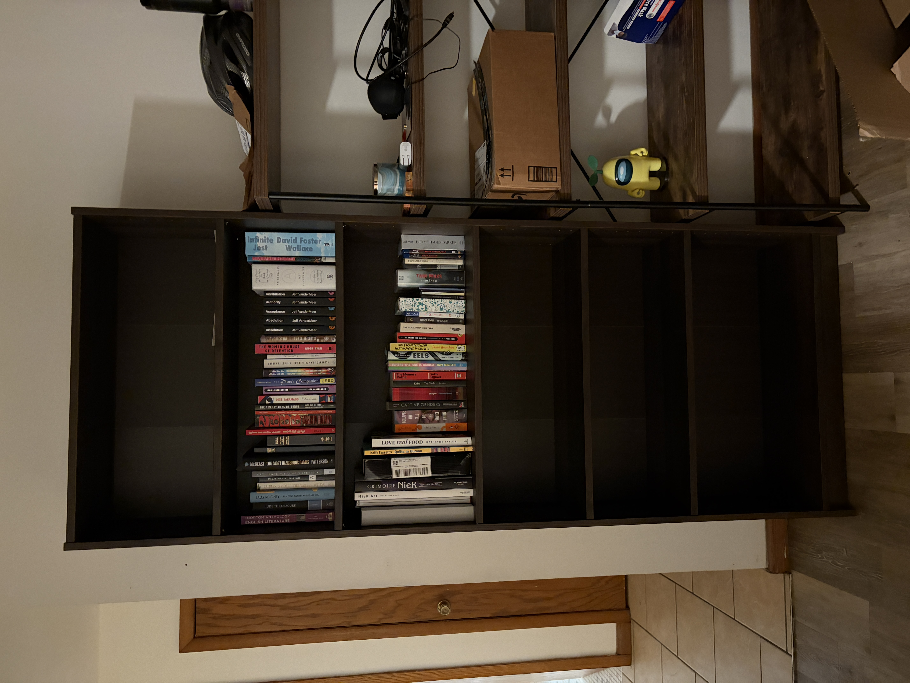
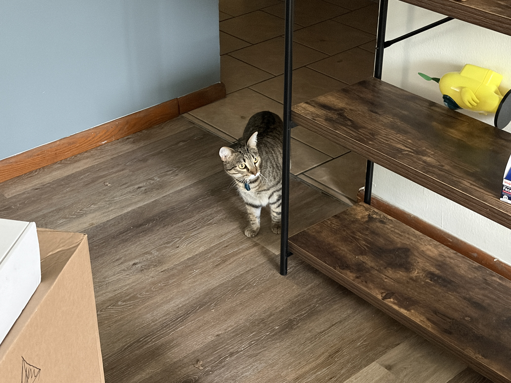
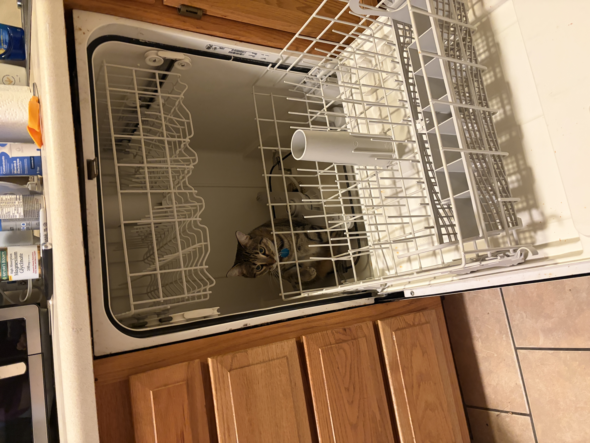
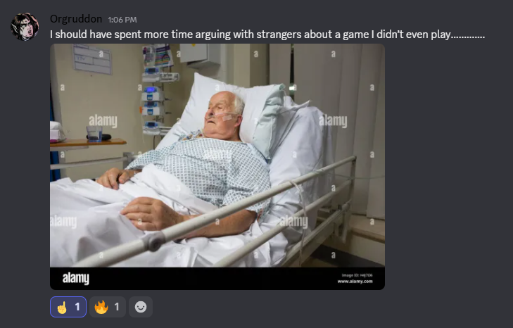

I went to IKEA
Yuuuuuuup. And for the first time too. I've wanted to get a bookshelf for my new apartment, and my dad has a car with a giant back, so we went to IKEA yesterday.
Entering the IKEA...
I feel compelled to say the experience was strange, for some reason, but, it wasn't, really. It was kind of nondescript and extremely normal, other than all the performative Swedish. Is it performative? I guess for a lot of the employees, who are not Swedish, it feels performative. Not that that's a bad thing.

The veggie balls, mashed potatoes, peas and green beans, and cranberry stuff. With Dumle 🧡
I got some food at the kitchen there, on the second floor of IKEA. I did some research beforehand and found out they had Veggie Balls, a vegetarian substitute for their famous Swedish meatballs (which warby informed me are called "köttbullar"). I had some. My real-time review:
The veggie balls are really really good
With the veggie gravy? Holy shit it's amazing
Fucking
Lots of umami
A little plain
There's a bit of that bean burger taste though idk if these are made with beans
Very spiced
So good
With the cran? Ohhhh my
Yum yum yum
My dad likes the fish too
Mashed potatoes are like perfectly salted
God it's so good
Not the biggest fan of green beans but these beans are so good
Wandered around the second floor showcase area for a while after that. Was, you know, a showcase area — long and there were plenty of showcases. I sat in this $1,400 couch which was top 5 comfiest couches I've ever sat on. Shame it's $1,400! Laid on some beds, picked up some really cheap clotheshangers (because my Walmart clotheshangers keep breaking). There weren't any large fans in any part of IKEA so the air was very still, which made me very uncomfortable, I was sweating a lot. Idk if that's just an IKEA Minneapolis thing or if no IKEAs have fans around — but they really should!


Two show areas with weird vibes.
Checkout process suuuuucked. They had a 15% off student discount, and I'm a student, which means I could get 15% off. However they used a shitty third party verification thing on their website, which kept going “errr! Your first name doesn't match your college's records! Fuck you!" (for context, my IRL name and my legal first name are different because I use a nickname which I've been called since birth, and on my student I.D. and all my records I gave my preferred IRL name and not my legal name). Anyways, after fiddling with my phone and their terrible laggy system for like 20+ minutes, I went to customer service and they solved it pretty quickly. But then I was subject to a random screening at the end of the checkout process? Which was fucking strange and an incredibly minor annoyance. Thumbs down, IKEA. Thumbs down!
It was all alright in the end though. I got a Veggie Dog at their right-by-the-checkout mini food area, alongside a soda. Veggie dog live review (no toppings):
Veggie hot dog
I mean it looks terrible but it's good
It's like
A very good veggie dog
But man they have pear sparkling soda
It is So Good

My mouth is watering just now thinking of it 🍐
Holy forking shirtballs guys I was soying the fuck out over that sparkling pear soda. I fucking love pears, pearjak image, put the pearjak image here.
The soda wasn't even a particularly good soda but it was a pear-flavored soda so it was fucking scrumptious. I got like two refills during the whole overly-long-and-tedious checkout process. Man. So fucking good.
Setting up the bookshelf was alright. I can't find my rubber mallet so I used my heads/tails brick as a hammer. Absolute worst part of moving is not knowing where fucking anything is. Which is why having this bookshelf is nice — now all my books go here! Problem solved. My dad and I ended up getting the bookshelf in through the floor window, which made things way easier than having to navigate stairs and multiple doors for this insanely-heavy overly-long box (with no dolly or anything). Bertuch was terrified of the outside world. She always wants to leave the apartment but is so scared when I give her the opportunity.


The bookshelf, before and after 📚
Here's some bonus photos of Bertuch (:


🐈
You know, as I was writing this, Niboe randomly rejoined RFCK after over half a decade away. We talked for a good while — they asked about me, what my deal was, how I became the admin of the place. And then Kip and Org chimed in a bunch. It was good. Mirthful. Then I went to a meeting with the City of St. Paul Parks Department because I'm volunteering to write social media posts for them for the month of November for a class I'm taking. And then I came back to my apartment to finish this. Niboe is really, really rad. I'm glad I finally got to meet and talk with them.

Fucking good reminiscing. Cool by Gwen Stefani, y'know?